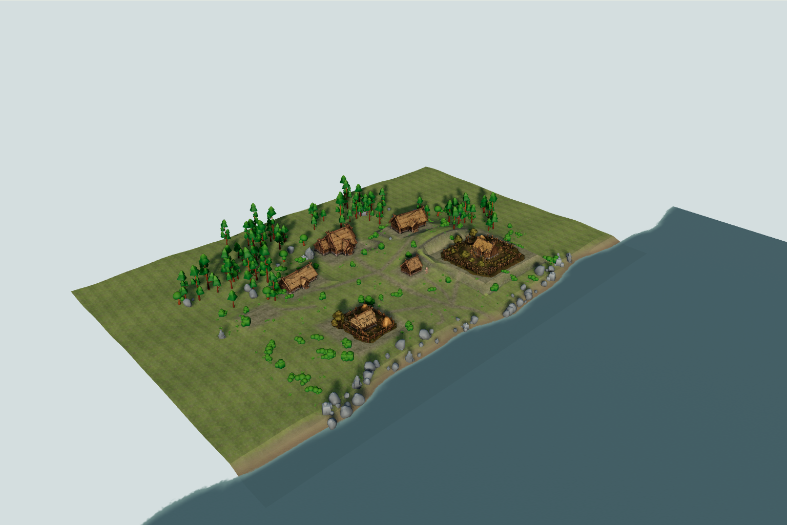
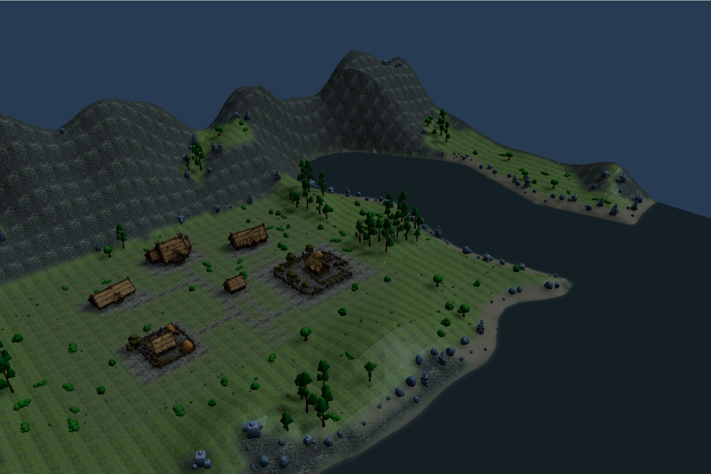

Procedural Fjordside Generator v0.1
Environment Lab proposal awaiting independent visual review. These are actual browser captures, not generated concept art. Live Fjordside adoption is a separate decision.
Open Environment Lab · QA report · Raw browser measurements · Seed validation / replay hashes · Initial two-seed proof

Reference seed 1983 · original authored Environment Lab. High overlook shares fixed world-space camera/settings. Village views are settlement-relative.
Original owner references: REF-A and REF-B
 REF-A · art direction, not an implementation screenshot.
REF-A · art direction, not an implementation screenshot. REF-B · owner supplied composition and atmosphere target.
REF-B · owner supplied composition and atmosphere target.Native biome / walkability overlays and night

Measured costs
Same device, viewport, DPR, high-overlook camera, fog-off, low-sun settings and paused animations. Reference Lab has one resident; generated proposals have ten. This is total proposal cost, not an isolated terrain benchmark. Each row averages the medians/P95 values of three four-second rAF samples; individual intervals remain in browser-review.json. Timings are diagnostic, not a fixed performance gate.
| Fixture / tier | Median ms | P95 ms | Draw calls incl. shadows | Triangles incl. shadows |
|---|
Review focus
Assess the changed coastline and mountain silhouette, the reserved six-parcel clearing, source fidelity, forest clustering and shoreline transitions. Native source masks soften the ground layers. The KayKit crown shapes, bright foliage, bounded height-field edge, sparse forests and missing scene-geometry reflections remain visible limitations. The source water implementation is retained; it does not reflect trees/buildings.